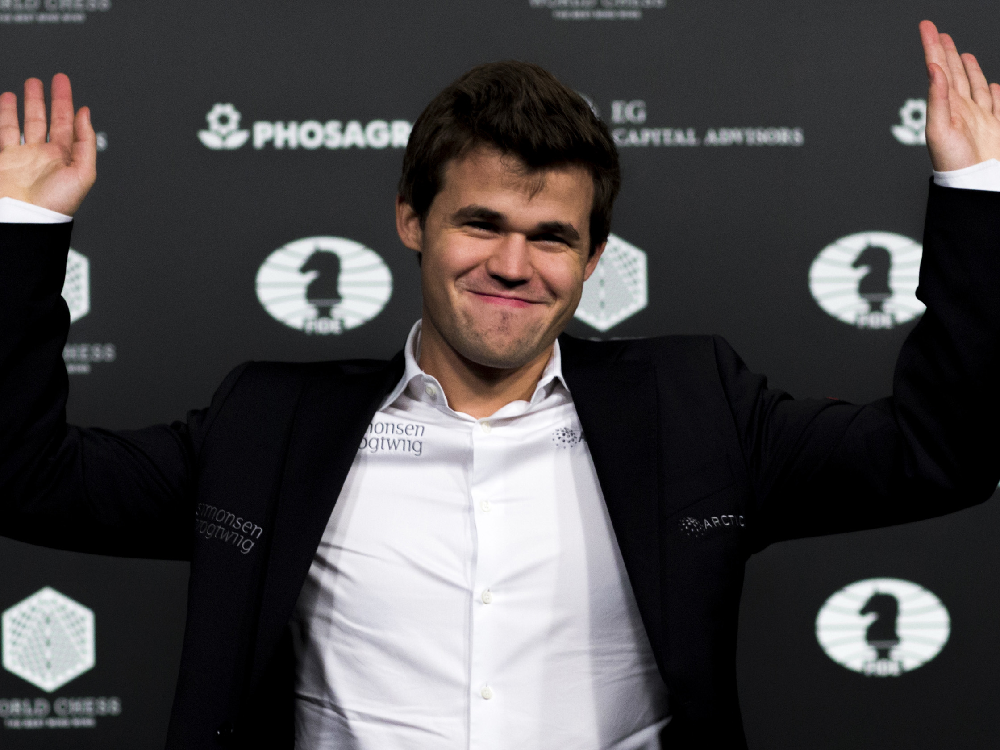
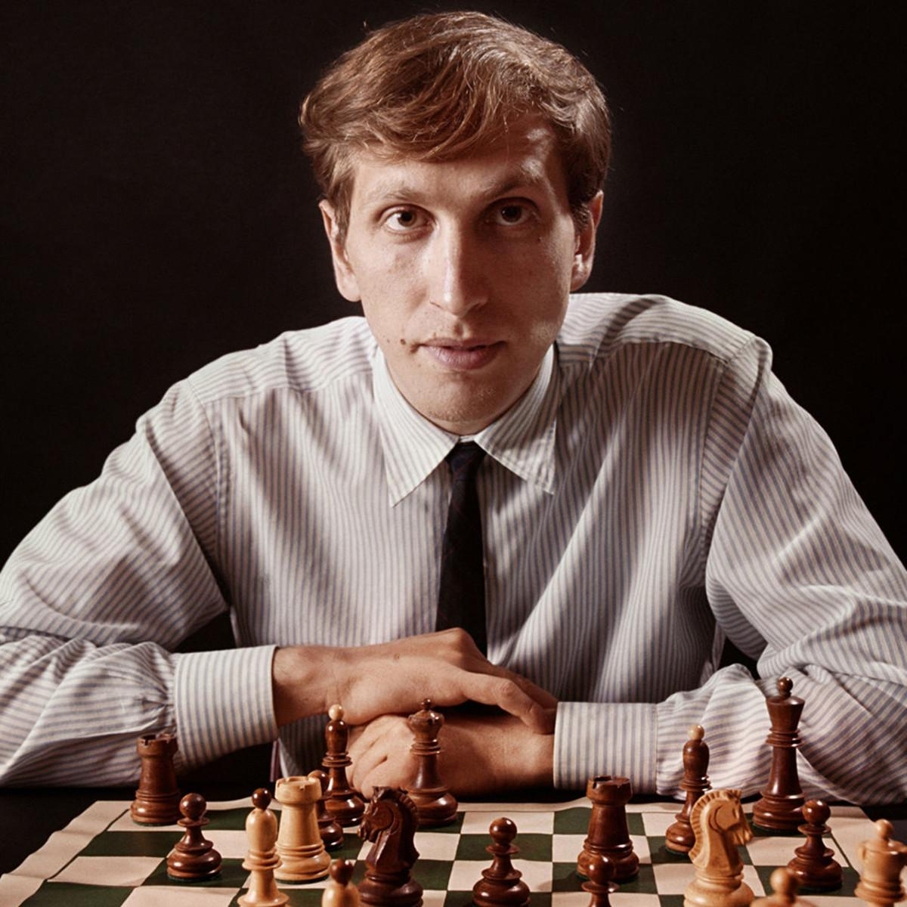

Magnus Carlsen is the dominant force of the modern chess era, known for his universal style, flawless endgame technique, and ability to squeeze wins from positions that look completely equal. With the highest rating ever recorded (2882) and a decade of global dominance across classical, rapid, and blitz formats, he represents the perfect balance of intuition, calculation, and psychological steadiness. His consistency and adaptability place him among the greatest players in the history of the game.

Bobby Fischer was a once-in-a-century prodigy whose explosive rise and 1972 World Championship victory ended Soviet control over chess and transformed the sport forever. His style combined brutal accuracy, deep preparation, and sharp tactical ambition, making him a terrifying opponent. Fischer’s influence extended beyond the board — he raised the standards of professional training, revolutionized opening theory, and became a global symbol of individual genius versus institutional power.
Hikaru Nakamura defines the digital age of chess, bridging elite competitive strength with massive online presence. Known for his hyper-aggressive blitz play, unparalleled resourcefulness, and ability to thrive in chaotic positions, he has become the face of modern speed chess. As a five-time U.S. champion, world-class blitz specialist, and leading streamer, Hikaru reshaped how chess is taught, consumed, and experienced by a global audience.